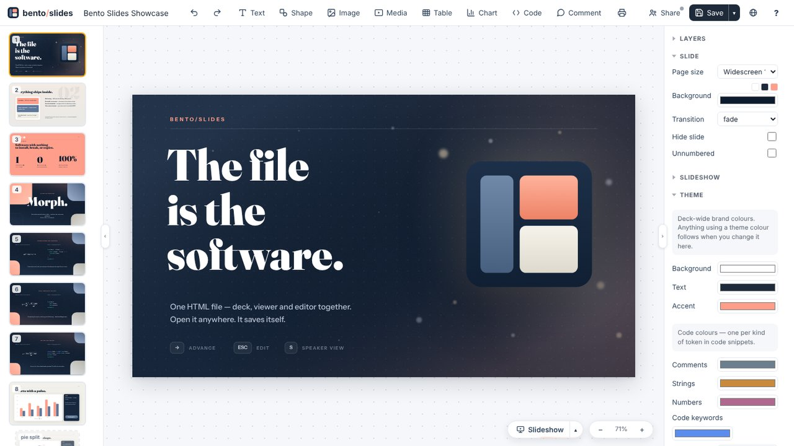

Slides création / édition · repo externe
Une alternative à PowerPoint qui tient dans un seul fichier HTML : le deck, le lecteur, le mode présentateur et l'éditeur voyagent ensemble. On enregistre, et le fichier se réécrit avec le deck dedans. Transitions « morph », graphiques intégrés, collaboration chiffrée de bout en bout (optionnelle), document en JSON lisible et facile à faire éditer par une IA.
« Hors ligne » active l'interrupteur Offline mode de Bento (préférence bento-offline du navigateur) avant l'ouverture : aucune requête ne sort, ni vérification de mise à jour, ni packs de langue, ni relais de collaboration. Par défaut, Bento contacte bento.page à chaque lancement.

.bento.html se réécrit avec le deck (File System Access, sinon téléchargement)..bento.html enregistré : il contient l'éditeur.| Contrôle | Résultat |
|---|---|
| Authenticité | ✓ Fichier identique sur bento.page et dans la release GitHub v1.2.13. Le manifeste signé ECDSA P-256 (clé publique du code source) épingle son SHA-256. |
| Runtime décompressé | ✓ 1,58 Mo de JS analysé : 1 seul fetch et 1 seul WebSocket, tous deux derrière net.ts (interrupteur hors ligne). Aucune télémétrie. |
| Test dynamique | ✓ Hors ligne : 0 requête. Par défaut : 1 GET du manifeste de mise à jour. Aucun WebSocket sans action de l'utilisateur. |
| Mises à jour | ✓ Jamais silencieuses : proposées, signées, hash épinglé, pas de rétrogradation, toujours un nouveau fichier. |
| Contenu collé ou reçu | ✓ Reconstruit clé par clé selon le schéma (untrusted.ts), valeurs CSS échappées. |
| Rebuild depuis les sources | ! Non fait : il aurait exécuté du code de build tiers non audité. Remplacé par la vérification de signature. |
| Pas de CSP | ! Le confinement réseau repose sur le code et non sur le navigateur. Les surcharges « dev » (bento-update-url…) sont lues sur le domaine : n'héberger aucune page tierce à côté. |
| Stockage et collab | ! Brouillons en local sur le domaine du site. Le relais de collaboration voit le chiffré et les métadonnées. Pour du confidentiel : télécharger, usage local, hors ligne. |
Fichiers .bento.html | ! Un fichier Bento est du code : n'ouvrir que des fichiers de confiance. |